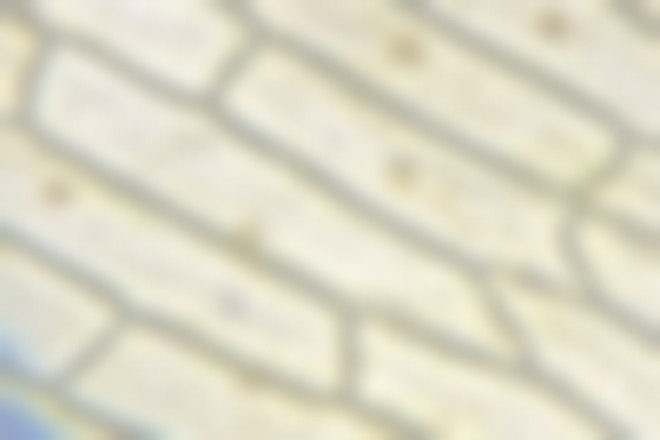

Does zoom reveal more detail?
Look at the starter image. In your book, predict what enlarging it will do to the cell boundaries. Then compare the two views.

Enlarging the starting image makes the blurred edges bigger. Switching to the clearer capture lets you follow separate cell boundaries more easily.
This model uses altered copies of one onion micrograph. The views illustrate display enlargement and image clarity. Their sizes have no calibrated scale.
Micrograph by Anonymous140209. Original photo · CC BY 4.0